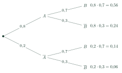
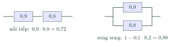

The Multiplication Rule for Independent EventsCông thức nhân xác suất
Grade 11 · Topic: Probability RulesLớp 11 · Chủ đề: Các quy tắc tính xác suất
1Lesson IntroductionGiới thiệu bài học
Learning goalsMục tiêu bài học
By the end of this lesson you can:
Sau bài học này, em có thể:
state the multiplication rule \(P(AB)=P(A)P(B)\) for independent events;
phát biểu công thức nhân xác suất \(P(AB)=P(A)P(B)\) cho hai biến cố độc lập;
compute probabilities over several independent trials with tree diagrams;
tính xác suất qua nhiều phép thử độc lập bằng sơ đồ hình cây;
combine the multiplication and addition rules ("exactly one", "at least one");
phối hợp công thức nhân và công thức cộng (bài toán "đúng một", "ít nhất một");
compute the reliability of systems in series and in parallel.
tính độ tin cậy của hệ thống mắc nối tiếp, song song.
2Mathematical VocabularyTừ vựng Toán học
multiplication rule – for independent events: \(P(AB)=P(A)\cdot P(B)\).
công thức nhân xác suất – với hai biến cố độc lập: \(P(AB)=P(A)\cdot P(B)\).
independent trials – experiments whose results do not influence each other.
phép thử độc lập – các phép thử mà kết quả của phép thử này không ảnh hưởng đến phép thử kia.
reliability – the probability that a device or system works.
độ tin cậy – xác suất để một thiết bị, hệ thống hoạt động tốt.
3Useful English PhrasesCụm từ tiếng Anh thường gặp
The two shots are independent.
Hai lần bắn độc lập với nhau.
Multiply along a branch, add across branches.
Nhân dọc theo nhánh, cộng các nhánh lại.
The system works if at least one pump works.
Hệ thống hoạt động nếu có ít nhất một máy bơm hoạt động.
The probability of missing all three is small.
Xác suất trượt cả ba lần là nhỏ.
These cases are mutually exclusive.
Các trường hợp này xung khắc với nhau.
4Prerequisite ReviewÔn tập kiến thức nền
From Bài 28–29: independent events, \(P(\overline A)=1-P(A)\), \(P(A\cup B)=P(A)+P(B)-P(AB)\); mutually exclusive events add.
Từ Bài 28–29: biến cố độc lập, \(P(\overline A)=1-P(A)\), \(P(A\cup B)=P(A)+P(B)-P(AB)\); các biến cố xung khắc thì cộng xác suất.
5TheoryLý thuyết
5.1 The multiplication ruleCông thức nhân xác suất
Multiplication ruleCông thức nhân
If \(A\), \(B\) are independent: \[P(AB)=P(A)\cdot P(B).\]
Nếu \(A\), \(B\) là hai biến cố độc lập thì \[P(AB)=P(A)\cdot P(B).\]
Conversely, if \(P(AB)\ne P(A)P(B)\) then \(A\), \(B\) are not independent.
Ngược lại, nếu \(P(AB)\ne P(A)P(B)\) thì \(A\), \(B\) không độc lập.
For \(n\) mutually independent events: \(P(A_1A_2\ldots A_n)=P(A_1)P(A_2)\ldots P(A_n)\).
Với \(n\) biến cố độc lập: \(P(A_1A_2\ldots A_n)=P(A_1)P(A_2)\ldots P(A_n)\).

Reading the treeĐọc sơ đồ cây
Both hit: \(0{,}56\). Exactly one hits: \(0{,}24+0{,}14=0{,}38\) (two mutually exclusive branches).
Cả hai trúng: \(0{,}56\). Đúng một người trúng: \(0{,}24+0{,}14=0{,}38\) (hai nhánh xung khắc).
At least one hits: \(1-0{,}06=0{,}94\).
Ít nhất một người trúng: \(1-0{,}06=0{,}94\).
5.2 Repeated trials and reliabilityPhép thử lặp và độ tin cậy
Typical patternsCác dạng thường gặp
\(n\) independent trials, success probability \(p\) each: P(all succeed) \(=p^n\); P(at least one success) \(=1-(1-p)^n\).
\(n\) phép thử độc lập, mỗi lần thành công với xác suất \(p\): P(thành công cả \(n\) lần) \(=p^n\); P(ít nhất một lần thành công) \(=1-(1-p)^n\).
Series system (works only if all parts work): multiply the probabilities.
Hệ nối tiếp (chỉ hoạt động khi mọi bộ phận hoạt động): nhân các xác suất.
Parallel system (works if at least one part works): \(1-\) product of failure probabilities.
Hệ song song (hoạt động khi có ít nhất một bộ phận hoạt động): \(1-\) tích các xác suất hỏng.

Watch out!Lưu ý
Use the multiplication rule only for independent events. Drawing two balls one after another from the same box without replacement is not independent.
Chỉ dùng công thức nhân cho các biến cố độc lập. Lấy lần lượt hai viên bi từ cùng một hộp không hoàn lại thì các biến cố không độc lập.
6Worked ExamplesVí dụ có lời giải
ExampleVí dụ 1BasicCơ bản – A coin and a dieĐồng xu và xúc xắc
A coin is tossed and a die is rolled. Find P(head and a number greater than 4).
Gieo một đồng xu và một con xúc xắc. Tính xác suất đồng xu ra mặt sấp và con xúc xắc ra số chấm lớn hơn 4.
Analysis: The two experiments are independent.
Phân tích: Hai phép thử độc lập.
\(P(S)=\frac12\), \(P(\{5;6\})=\frac26=\frac13\).
\(P(S)=\frac12\), \(P(\{5;6\})=\frac26=\frac13\).
\(P=\frac12\cdot\frac13\).
\(P=\frac12\cdot\frac13\).
\(\dfrac16\).
\(\dfrac16\).
ExampleVí dụ 2BasicCơ bản – Two shootersHai xạ thủ
Two shooters hit with probabilities 0,8 and 0,7, independently. Find P(both hit), P(exactly one hits), P(at least one hits).
Hai xạ thủ bắn độc lập với xác suất trúng 0,8 và 0,7. Tính xác suất cả hai trúng, đúng một người trúng, ít nhất một người trúng.
Analysis: Use the tree above.
Phân tích: Dùng sơ đồ cây ở trên.
Both: \(0{,}8\cdot0{,}7=0{,}56\).
Cả hai: \(0{,}8\cdot0{,}7=0{,}56\).
Exactly one: \(0{,}8\cdot0{,}3+0{,}2\cdot0{,}7=0{,}38\).
Đúng một: \(0{,}8\cdot0{,}3+0{,}2\cdot0{,}7=0{,}38\).
At least one: \(1-0{,}2\cdot0{,}3=0{,}94\).
Ít nhất một: \(1-0{,}2\cdot0{,}3=0{,}94\).
\(0{,}56\); \(0{,}38\); \(0{,}94\).
\(0{,}56\); \(0{,}38\); \(0{,}94\).
ExampleVí dụ 3IntermediateTrung bình – Penalty kicksSút phạt đền
A player scores a penalty with probability 0,8; kicks are independent. In 3 kicks, find P(all scored) and P(at least one scored).
Một cầu thủ sút phạt đền thành công với xác suất 0,8; các lần sút độc lập. Trong 3 lần sút, tính xác suất thành công cả 3 lần và xác suất thành công ít nhất một lần.
Analysis: Repeated independent trials.
Phân tích: Phép thử lặp độc lập.
All: \(0{,}8^3=0{,}512\).
Cả 3 lần: \(0{,}8^3=0{,}512\).
At least one: \(1-0{,}2^3=1-0{,}008=0{,}992\).
Ít nhất một lần: \(1-0{,}2^3=1-0{,}008=0{,}992\).
\(0{,}512\) and \(0{,}992\).
\(0{,}512\) và \(0{,}992\).
ExampleVí dụ 4IntermediateTrung bình – Backup pumpsMáy bơm dự phòng
A farm has two pumps working independently with reliability 0,9 and 0,8. Water is supplied if at least one pump works. Compare with using only the better pump.
Một trang trại có hai máy bơm hoạt động độc lập với độ tin cậy 0,9 và 0,8. Nước được cấp nếu có ít nhất một máy hoạt động. So sánh với việc chỉ dùng máy tốt hơn.
Analysis: Parallel system.
Phân tích: Hệ song song.
Both fail: \(0{,}1\cdot0{,}2=0{,}02\).
Cả hai hỏng: \(0{,}1\cdot0{,}2=0{,}02\).
Reliability: \(1-0{,}02=0{,}98>0{,}9\).
Độ tin cậy: \(1-0{,}02=0{,}98>0{,}9\).
\(0{,}98\): the backup pump cuts the failure risk from 10% to 2%.
\(0{,}98\): máy dự phòng giảm nguy cơ mất nước từ 10% xuống 2%.
ExampleVí dụ 5AdvancedNâng cao – Guessing a testĐoán trắc nghiệm
A student guesses 4 questions, each with 4 options, independently. Find P(exactly one correct) and P(at least one correct).
Một học sinh đoán ngẫu nhiên 4 câu trắc nghiệm, mỗi câu 4 phương án, các câu độc lập. Tính xác suất đúng đúng một câu và xác suất đúng ít nhất một câu.
Analysis: Exactly one: choose which question is correct (4 mutually exclusive cases).
Phân tích: Đúng một câu: chọn câu đúng (4 trường hợp xung khắc).
Each case: \(\frac14\cdot\left(\frac34\right)^3=\frac{27}{256}\); exactly one: \(4\cdot\frac{27}{256}=\frac{108}{256}=\frac{27}{64}\).
Mỗi trường hợp: \(\frac14\cdot\left(\frac34\right)^3=\frac{27}{256}\); đúng một câu: \(4\cdot\frac{27}{256}=\frac{27}{64}\).
At least one: \(1-\left(\frac34\right)^4=1-\frac{81}{256}=\frac{175}{256}\).
Ít nhất một câu: \(1-\left(\frac34\right)^4=1-\frac{81}{256}=\frac{175}{256}\).
\(\dfrac{27}{64}\approx0{,}42\) and \(\dfrac{175}{256}\approx0{,}68\).
\(\dfrac{27}{64}\approx0{,}42\) và \(\dfrac{175}{256}\approx0{,}68\).
7PracticeBài tập luyện tập
A. Multiple ChoiceA. Trắc nghiệm nhiều lựa chọn
Two independent shooters hit with probabilities 0{,}9 and 0{,}6. P(exactly one hits) =…
Hai xạ thủ bắn độc lập với xác suất trúng 0{,}9 và 0{,}6. Xác suất có đúng một người bắn trúng là…
Answer: b. Two exclusive branches.
Đáp án b. \(0{,}9\cdot0{,}4+0{,}1\cdot0{,}6\).
A device has 3 independent parts in series with reliabilities 0{,}9, 0{,}9, 0{,}8. P(device works) =…
Một thiết bị gồm 3 bộ phận mắc nối tiếp, hoạt động độc lập với độ tin cậy 0{,}9, 0{,}9, 0{,}8. Xác suất thiết bị hoạt động là…
Answer: b. Series: multiply.
Đáp án b. Nối tiếp: \(0{,}9\cdot0{,}9\cdot0{,}8\).
Each kick scores with probability 0{,}7, independently. P(at least one goal in 2 kicks) =…
Mỗi lần sút thành công với xác suất 0{,}7, các lần độc lập. Xác suất có ít nhất một lần thành công trong 2 lần sút là…
Answer: d. Complement: all miss.
Đáp án d. \(1-(1-0{,}7)^2\).
B. True or FalseB. Đúng hoặc sai
If \(A\), \(B\) are independent, \(P(A)=0{,}5\), \(P(B)=0{,}4\), then \(P(AB)=0{,}2\).
Nếu \(A\), \(B\) độc lập, \(P(A)=0{,}5\), \(P(B)=0{,}4\) thì \(P(AB)=0{,}2\).
Independence is needed for the product.
Công thức nhân chỉ đúng cho biến cố độc lập.
A parallel system is less reliable than each of its parts.
Hệ mắc song song có độ tin cậy nhỏ hơn từng bộ phận.
Series multiplies, parallel uses the complement.
Nối tiếp: nhân; song song: dùng biến cố đối.
C. Short AnswerC. Trả lời ngắn
Two backup generators work independently with reliabilities 0{,}8 and 0{,}7. The reliability of the pair (at least one works), in percent, is…
Hai máy phát điện dự phòng hoạt động độc lập với độ tin cậy 0{,}8 và 0{,}7. Độ tin cậy của hệ (có ít nhất một máy chạy) bằng bao nhiêu phần trăm?
Enter a number.
Nhập một số.
\(1-(1-u)(1-v)\).
\(1-0{,}2\cdot0{,}3\).
Two dice are rolled. P(both show a number at most 4) \(=\dfrac{a}{36}\). Find \(a\).
Gieo hai con xúc xắc. Xác suất cả hai con đều ra số chấm không lớn hơn 4 bằng \(\dfrac{a}{36}\). Tìm \(a\).
Enter a number.
Nhập một số.
\(\frac m6\cdot\frac m6\).
\(\dfrac{4}{6}\cdot\dfrac{4}{6}=\dfrac{16}{36}\).
A. Multiple ChoiceA. Trắc nghiệm nhiều lựa chọn
Two independent shooters hit with probabilities 0{,}7 and 0{,}5. P(exactly one hits) =…
Hai xạ thủ bắn độc lập với xác suất trúng 0{,}7 và 0{,}5. Xác suất có đúng một người bắn trúng là…
Answer: a. Two exclusive branches.
Đáp án a. \(0{,}7\cdot0{,}5+0{,}3\cdot0{,}5\).
A device has 3 independent parts in series with reliabilities 0{,}9, 0{,}8, 0{,}5. P(device works) =…
Một thiết bị gồm 3 bộ phận mắc nối tiếp, hoạt động độc lập với độ tin cậy 0{,}9, 0{,}8, 0{,}5. Xác suất thiết bị hoạt động là…
Answer: a. Series: multiply.
Đáp án a. Nối tiếp: \(0{,}9\cdot0{,}8\cdot0{,}5\).
Each kick scores with probability 0{,}6, independently. P(at least one goal in 3 kicks) =…
Mỗi lần sút thành công với xác suất 0{,}6, các lần độc lập. Xác suất có ít nhất một lần thành công trong 3 lần sút là…
Answer: a. Complement: all miss.
Đáp án a. \(1-(1-0{,}6)^3\).
B. True or FalseB. Đúng hoặc sai
Drawing two balls one after another without replacement from one box gives independent events.
Lấy lần lượt không hoàn lại hai viên bi từ cùng một hộp thì các biến cố "lần 1 đỏ", "lần 2 đỏ" độc lập.
Independence is needed for the product.
Công thức nhân chỉ đúng cho biến cố độc lập.
A series system is at most as reliable as its weakest part.
Độ tin cậy của hệ nối tiếp không vượt quá độ tin cậy của bộ phận kém nhất.
Series multiplies, parallel uses the complement.
Nối tiếp: nhân; song song: dùng biến cố đối.
C. Short AnswerC. Trả lời ngắn
Two backup generators work independently with reliabilities 0{,}9 and 0{,}6. The reliability of the pair (at least one works), in percent, is…
Hai máy phát điện dự phòng hoạt động độc lập với độ tin cậy 0{,}9 và 0{,}6. Độ tin cậy của hệ (có ít nhất một máy chạy) bằng bao nhiêu phần trăm?
Enter a number.
Nhập một số.
\(1-(1-u)(1-v)\).
\(1-0{,}1\cdot0{,}4\).
Two dice are rolled. P(both show a number at most 5) \(=\dfrac{a}{36}\). Find \(a\).
Gieo hai con xúc xắc. Xác suất cả hai con đều ra số chấm không lớn hơn 5 bằng \(\dfrac{a}{36}\). Tìm \(a\).
Enter a number.
Nhập một số.
\(\frac m6\cdot\frac m6\).
\(\dfrac{5}{6}\cdot\dfrac{5}{6}=\dfrac{25}{36}\).
A. Multiple ChoiceA. Trắc nghiệm nhiều lựa chọn
Two independent shooters hit with probabilities 0{,}8 and 0{,}4. P(exactly one hits) =…
Hai xạ thủ bắn độc lập với xác suất trúng 0{,}8 và 0{,}4. Xác suất có đúng một người bắn trúng là…
Answer: b. Two exclusive branches.
Đáp án b. \(0{,}8\cdot0{,}6+0{,}2\cdot0{,}4\).
A device has 3 independent parts in series with reliabilities 0{,}8, 0{,}7, 0{,}5. P(device works) =…
Một thiết bị gồm 3 bộ phận mắc nối tiếp, hoạt động độc lập với độ tin cậy 0{,}8, 0{,}7, 0{,}5. Xác suất thiết bị hoạt động là…
Answer: a. Series: multiply.
Đáp án a. Nối tiếp: \(0{,}8\cdot0{,}7\cdot0{,}5\).
Each kick scores with probability 0{,}4, independently. P(at least one goal in 3 kicks) =…
Mỗi lần sút thành công với xác suất 0{,}4, các lần độc lập. Xác suất có ít nhất một lần thành công trong 3 lần sút là…
Answer: a. Complement: all miss.
Đáp án a. \(1-(1-0{,}4)^3\).
B. True or FalseB. Đúng hoặc sai
If \(P(A)=0{,}6\), \(P(B)=0{,}5\), \(P(AB)=0{,}3\), then \(A\), \(B\) are independent.
Nếu \(P(A)=0{,}6\), \(P(B)=0{,}5\), \(P(AB)=0{,}3\) thì \(A\), \(B\) độc lập.
Independence is needed for the product.
Công thức nhân chỉ đúng cho biến cố độc lập.
Adding a backup in parallel always increases reliability (if the backup works with positive probability).
Mắc thêm một bộ phận dự phòng song song (có xác suất hoạt động dương) luôn làm tăng độ tin cậy.
Series multiplies, parallel uses the complement.
Nối tiếp: nhân; song song: dùng biến cố đối.
C. Short AnswerC. Trả lời ngắn
Two backup generators work independently with reliabilities 0{,}5 and 0{,}5. The reliability of the pair (at least one works), in percent, is…
Hai máy phát điện dự phòng hoạt động độc lập với độ tin cậy 0{,}5 và 0{,}5. Độ tin cậy của hệ (có ít nhất một máy chạy) bằng bao nhiêu phần trăm?
Enter a number.
Nhập một số.
\(1-(1-u)(1-v)\).
\(1-0{,}5\cdot0{,}5\).
Two dice are rolled. P(both show a number at most 2) \(=\dfrac{a}{36}\). Find \(a\).
Gieo hai con xúc xắc. Xác suất cả hai con đều ra số chấm không lớn hơn 2 bằng \(\dfrac{a}{36}\). Tìm \(a\).
Enter a number.
Nhập một số.
\(\frac m6\cdot\frac m6\).
\(\dfrac{2}{6}\cdot\dfrac{2}{6}=\dfrac{4}{36}\).
D. Self-practice: Multiple ChoiceD. Tự luyện: trắc nghiệm
Two shooters hit the target independently with probabilities 0{,}9 and 0{,}6. P(both hit) =…
Hai xạ thủ bắn độc lập, xác suất bắn trúng lần lượt là 0{,}9 và 0{,}6. Xác suất cả hai cùng trúng là…
Answer: b. \(P(AB)=P(A)P(B)\).
Đáp án b. Độc lập: \(0{,}9\cdot0{,}6\).
Two shooters hit independently with probabilities 0{,}9 and 0{,}6. P(the target is hit at least once) =…
Hai xạ thủ bắn độc lập với xác suất trúng 0{,}9 và 0{,}6. Xác suất mục tiêu bị trúng ít nhất một phát là…
Answer: a. \(1-P(\overline A)P(\overline B)\).
Đáp án a. \(1-(1-0{,}9)(1-0{,}6)\).
Two machines work independently with probabilities 0{,}6 and 0{,}7. P(exactly one works) =…
Hai máy hoạt động độc lập, xác suất mỗi máy hoạt động tốt là 0{,}6 và 0{,}7. Xác suất có đúng một máy hoạt động tốt là…
Answer: c. \(P(A\overline B)+P(\overline AB)\).
Đáp án c. \(0{,}6\cdot(1-0{,}7)+(1-0{,}6)\cdot0{,}7\) (hai trường hợp xung khắc).
Three independent components work with probabilities 0{,}6, 0{,}9, 0{,}5. A device works only if all three work. P(device works) =…
Một thiết bị gồm ba bộ phận hoạt động độc lập với xác suất 0{,}6, 0{,}9, 0{,}5; thiết bị chỉ chạy khi cả ba bộ phận đều hoạt động. Xác suất thiết bị chạy là…
Answer: a. Product of the three.
Đáp án a. Quy tắc nhân cho các biến cố độc lập: \(0{,}6\cdot0{,}9\cdot0{,}5\).
A coin is tossed and a die is rolled. P(the coin shows tail and the die shows at least 4) =…
Gieo một đồng xu và một con xúc xắc. Xác suất đồng xu ra mặt ngửa và con xúc xắc ra mặt không nhỏ hơn 4 chấm là…
Answer: b. Independent: \(\frac12\cdot\dfrac{1}{2}\).
Đáp án b. Hai phép thử độc lập: \(\frac12\cdot\dfrac{1}{2}\).
A player scores a penalty with probability 0{,}5, independently each time. P(he misses all 3 penalties) =…
Một cầu thủ sút phạt đền thành công với xác suất 0{,}5, các lần sút độc lập. Xác suất cầu thủ đó sút trượt cả 3 quả là…
Answer: b. \((1-p)^3\).
Đáp án b. \((1-0{,}5)^3\).
\(P(A)=0{,}5\), \(P(B)=0{,}7\), \(P(AB)=0{,}45\). Are \(A\) and \(B\) independent?
Cho \(P(A)=0{,}5\), \(P(B)=0{,}7\), \(P(AB)=0{,}45\). Hai biến cố \(A\), \(B\) có độc lập không?
Answer: a. Compare \(P(AB)\) with \(P(A)P(B)=0{,}35\).
Đáp án a. So sánh \(P(AB)\) với \(P(A)P(B)=0{,}35\).
A student guesses 3 multiple-choice questions, each with 4 options. P(at least one correct) =…
Một học sinh đoán ngẫu nhiên 3 câu trắc nghiệm, mỗi câu có 4 phương án. Xác suất đúng ít nhất một câu là…
Answer: c. Complement: all wrong \(\left(\frac34\right)^3\).
Đáp án c. Biến cố đối "sai cả 3 câu": \(\left(\frac34\right)^3\) (các câu độc lập).
D. Self-practice: Multiple ChoiceD. Tự luyện: trắc nghiệm
Two shooters hit the target independently with probabilities 0{,}8 and 0{,}9. P(both hit) =…
Hai xạ thủ bắn độc lập, xác suất bắn trúng lần lượt là 0{,}8 và 0{,}9. Xác suất cả hai cùng trúng là…
Answer: c. \(P(AB)=P(A)P(B)\).
Đáp án c. Độc lập: \(0{,}8\cdot0{,}9\).
Two shooters hit independently with probabilities 0{,}8 and 0{,}5. P(the target is hit at least once) =…
Hai xạ thủ bắn độc lập với xác suất trúng 0{,}8 và 0{,}5. Xác suất mục tiêu bị trúng ít nhất một phát là…
Answer: a. \(1-P(\overline A)P(\overline B)\).
Đáp án a. \(1-(1-0{,}8)(1-0{,}5)\).
Two machines work independently with probabilities 0{,}5 and 0{,}7. P(exactly one works) =…
Hai máy hoạt động độc lập, xác suất mỗi máy hoạt động tốt là 0{,}5 và 0{,}7. Xác suất có đúng một máy hoạt động tốt là…
Answer: c. \(P(A\overline B)+P(\overline AB)\).
Đáp án c. \(0{,}5\cdot(1-0{,}7)+(1-0{,}5)\cdot0{,}7\) (hai trường hợp xung khắc).
Three independent components work with probabilities 0{,}9, 0{,}6, 0{,}8. A device works only if all three work. P(device works) =…
Một thiết bị gồm ba bộ phận hoạt động độc lập với xác suất 0{,}9, 0{,}6, 0{,}8; thiết bị chỉ chạy khi cả ba bộ phận đều hoạt động. Xác suất thiết bị chạy là…
Answer: b. Product of the three.
Đáp án b. Quy tắc nhân cho các biến cố độc lập: \(0{,}9\cdot0{,}6\cdot0{,}8\).
A coin is tossed and a die is rolled. P(the coin shows tail and the die shows 4) =…
Gieo một đồng xu và một con xúc xắc. Xác suất đồng xu ra mặt ngửa và con xúc xắc ra mặt 4 chấm là…
Answer: a. Independent: \(\frac12\cdot\dfrac{1}{6}\).
Đáp án a. Hai phép thử độc lập: \(\frac12\cdot\dfrac{1}{6}\).
A player scores a penalty with probability 0{,}8, independently each time. P(he misses all 3 penalties) =…
Một cầu thủ sút phạt đền thành công với xác suất 0{,}8, các lần sút độc lập. Xác suất cầu thủ đó sút trượt cả 3 quả là…
Answer: d. \((1-p)^3\).
Đáp án d. \((1-0{,}8)^3\).
\(P(A)=0{,}5\), \(P(B)=0{,}8\), \(P(AB)=0{,}4\). Are \(A\) and \(B\) independent?
Cho \(P(A)=0{,}5\), \(P(B)=0{,}8\), \(P(AB)=0{,}4\). Hai biến cố \(A\), \(B\) có độc lập không?
Answer: c. Compare \(P(AB)\) with \(P(A)P(B)=0{,}4\).
Đáp án c. So sánh \(P(AB)\) với \(P(A)P(B)=0{,}4\).
A student guesses 4 multiple-choice questions, each with 4 options. P(at least one correct) =…
Một học sinh đoán ngẫu nhiên 4 câu trắc nghiệm, mỗi câu có 4 phương án. Xác suất đúng ít nhất một câu là…
Answer: c. Complement: all wrong \(\left(\frac34\right)^4\).
Đáp án c. Biến cố đối "sai cả 4 câu": \(\left(\frac34\right)^4\) (các câu độc lập).
D. Self-practice: Multiple ChoiceD. Tự luyện: trắc nghiệm
Two shooters hit the target independently with probabilities 0{,}5 and 0{,}6. P(both hit) =…
Hai xạ thủ bắn độc lập, xác suất bắn trúng lần lượt là 0{,}5 và 0{,}6. Xác suất cả hai cùng trúng là…
Answer: c. \(P(AB)=P(A)P(B)\).
Đáp án c. Độc lập: \(0{,}5\cdot0{,}6\).
Two shooters hit independently with probabilities 0{,}9 and 0{,}8. P(the target is hit at least once) =…
Hai xạ thủ bắn độc lập với xác suất trúng 0{,}9 và 0{,}8. Xác suất mục tiêu bị trúng ít nhất một phát là…
Answer: a. \(1-P(\overline A)P(\overline B)\).
Đáp án a. \(1-(1-0{,}9)(1-0{,}8)\).
Two machines work independently with probabilities 0{,}9 and 0{,}5. P(exactly one works) =…
Hai máy hoạt động độc lập, xác suất mỗi máy hoạt động tốt là 0{,}9 và 0{,}5. Xác suất có đúng một máy hoạt động tốt là…
Answer: b. \(P(A\overline B)+P(\overline AB)\).
Đáp án b. \(0{,}9\cdot(1-0{,}5)+(1-0{,}9)\cdot0{,}5\) (hai trường hợp xung khắc).
Three independent components work with probabilities 0{,}9, 0{,}5, 0{,}7. A device works only if all three work. P(device works) =…
Một thiết bị gồm ba bộ phận hoạt động độc lập với xác suất 0{,}9, 0{,}5, 0{,}7; thiết bị chỉ chạy khi cả ba bộ phận đều hoạt động. Xác suất thiết bị chạy là…
Answer: c. Product of the three.
Đáp án c. Quy tắc nhân cho các biến cố độc lập: \(0{,}9\cdot0{,}5\cdot0{,}7\).
A coin is tossed and a die is rolled. P(the coin shows head and the die shows at least 5) =…
Gieo một đồng xu và một con xúc xắc. Xác suất đồng xu ra mặt sấp và con xúc xắc ra mặt không nhỏ hơn 5 chấm là…
Answer: d. Independent: \(\frac12\cdot\dfrac{1}{3}\).
Đáp án d. Hai phép thử độc lập: \(\frac12\cdot\dfrac{1}{3}\).
A player scores a penalty with probability 0{,}7, independently each time. P(he misses all 2 penalties) =…
Một cầu thủ sút phạt đền thành công với xác suất 0{,}7, các lần sút độc lập. Xác suất cầu thủ đó sút trượt cả 2 quả là…
Answer: c. \((1-p)^2\).
Đáp án c. \((1-0{,}7)^2\).
\(P(A)=0{,}5\), \(P(B)=0{,}6\), \(P(AB)=0{,}4\). Are \(A\) and \(B\) independent?
Cho \(P(A)=0{,}5\), \(P(B)=0{,}6\), \(P(AB)=0{,}4\). Hai biến cố \(A\), \(B\) có độc lập không?
Answer: b. Compare \(P(AB)\) with \(P(A)P(B)=0{,}3\).
Đáp án b. So sánh \(P(AB)\) với \(P(A)P(B)=0{,}3\).
A student guesses 5 multiple-choice questions, each with 4 options. P(at least one correct) =…
Một học sinh đoán ngẫu nhiên 5 câu trắc nghiệm, mỗi câu có 4 phương án. Xác suất đúng ít nhất một câu là…
Answer: d. Complement: all wrong \(\left(\frac34\right)^5\).
Đáp án d. Biến cố đối "sai cả 5 câu": \(\left(\frac34\right)^5\) (các câu độc lập).
8Common MistakesLỗi thường gặp
Multiplying dependent events. Check independence first.
Nhân xác suất của các biến cố không độc lập. Phải kiểm tra tính độc lập trước.
Adding instead of multiplying along a branch. "and" multiplies, "or" (exclusive) adds.
Cộng thay vì nhân dọc theo nhánh. "và" thì nhân, "hoặc" (xung khắc) thì cộng.
Forgetting a case in "exactly one". Both branches \(A\overline B\) and \(\overline AB\) count.
Bỏ sót trường hợp khi tính "đúng một". Cả hai nhánh \(A\overline B\) và \(\overline AB\) đều được tính.
Writing \(P(\text{at least one})=n\cdot p\). Use \(1-(1-p)^n\).
Viết \(P(\text{ít nhất một})=n\cdot p\). Phải dùng \(1-(1-p)^n\).
9Lesson SummaryTổng kết
Independent: \(P(AB)=P(A)P(B)\).
Độc lập: \(P(AB)=P(A)P(B)\).
Trees: multiply along a branch, add mutually exclusive branches.
Sơ đồ cây: nhân dọc nhánh, cộng các nhánh xung khắc.
\(n\) trials: all \(p^n\), at least one \(1-(1-p)^n\). Series: product; parallel: \(1-\prod(1-p_i)\).
\(n\) lần thử: tất cả \(p^n\), ít nhất một \(1-(1-p)^n\). Nối tiếp: tích; song song: \(1-\prod(1-p_i)\).
Key words: multiplication rule, independent trials, reliability.
Từ cần nhớ: multiplication rule, independent trials, reliability.